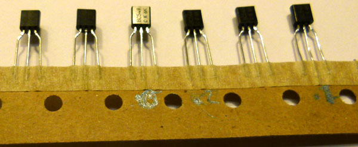
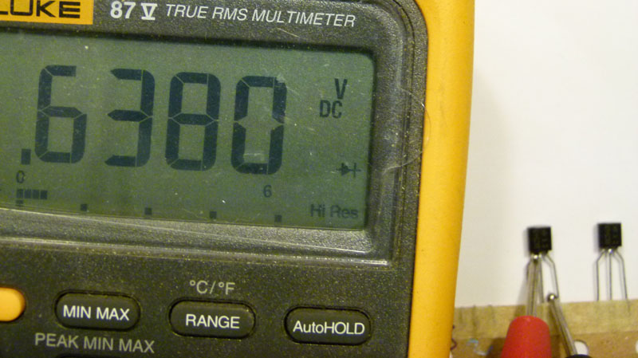

Simple transistor matching guide
for music synthesizers.
This is a simple way to match transistors for less critical applications. The quality of the matching depends on the quality of your multimeter, and the precautions and effort you put into doing the matching.
- Modern transistors are often closely matched anyway, so we will use this to our advantage. Testing small numbers of transistors will usually result in several useful pairs. Batches of 20 transistors are convenient to work with.
- Modern multimeters have a convenient inbuilt current source with a voltage monitor, in the form of the diode test function. Some meters have a high resolution mode. Use it if available.
- Modern transistors are often available on tape, for use with PCB stuffing machines. Again, this is to our advantage. If your transistors are loose, it is advisable you stick them to a piece of paper with masking tape or similar, with enough lead exposed that you can touch them with your multimeter probes.

- The transistors MUST be at the same temperature, so leave them sitting around for a day after taping them to the paper for them to stabilize with respect to each other. Pick a time of day where the temperature is not changing or use an air-conditioned/heated room that is at a constant temperature. Be careful not to lean on or touch the transistors. Do not leave your hands in close proximity to them when possible.
- For NPN transistors, with the multimeter set to the diode test function, touch the emitter with the black probe, and use the red probe to short circuit the base and collector together pins together. Count to two, and read the value on the meter. The point of counting is to give a constant time between current starting to flow, and you taking the reading, as even this current will affect the temperature of the transistor. If the reading is above 0.7 volts, your probe is not in contact with the collector. Abandon the transistor and move on to the next. (The transistor is okay, but you've heated its junction, so just move on.) If the reading is above 0.6 volts and below 0.7 volts, make a note of the voltage. This is the voltage you will match with other transistors you have tested to get a pair. Ideally, pair transistors with identical readings. At the very least, pick them with readings as close together as possible.

- Move onto the next transistor and repeat the process.
- Note that any transistors matched in this batch are only matched to each other. Select your matched transistors from the batch. Any that do not have a match should be put back with the other un-matched transistors.
- For PNP transistors, reverse the probes.
Article, art & design copyright 2014 by Ken Stone
Modular Synth Home Disclaimer
|